Создание повторного запроса на сертификат юридического лица
Для чего этот сертификат?
Сертификат юридического лица отличается от обычно выдаваемых казначейством сертификатов (например для закупок по 44-ФЗ или для работы с СУФД), тем, что в своем составе содержит ОГРН организации и ИНН руководителя. Так же в сертификате обязательно прописывается должность руководителя.
Такой сертификат требуется в первую очередь для первичной регистрации организации для работы с закупками по 223-ФЗ. Но так же он подойдет для работы с порталом ПИК ЕАСУЗ, его же можно использовать на портале Госуслуг.
Есть и ограничение, связанное с получением подобного ключа - казначейство издает подобные сертификаты только на руководителей организаций. В процессе подачи заявление происходит проверка через базы данных налоговой службы и если находятся расхождения с данными ЕГРЮЛ запрос автоматически отклоняется.
Ниже описаны шаги по созданию повторного запроса, то есть в случае если у вас уже есть действующий ключ, например для закупок.
Что нужно чтобы начать?
- Настроенная рабочая станция.
- Действующий ключ, выданный Федеральным казначейством - физического или юридического лица.
- Найти на портале проверки ЕГРЮЛ свою организацию.
Вход на портал
Зайдите на главную страницу портала ФЗС по адресу https://fzs.roskazna.ru и пройдите в личный кабинет при помощи кнопки Войти по сертификату 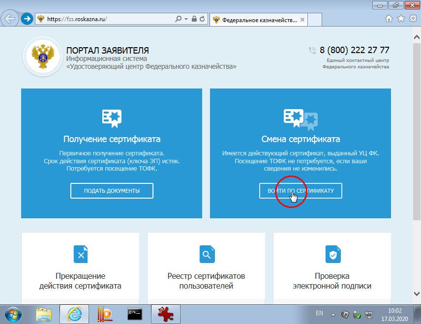
Выберите сертификат для входа - подойдет любой действующий сертификат, выданный казначейством. Введите пароль от ключа.

На открывшейся вкладке Сформировать запрос в выпадающем меню Субьект РФ выберите Московскую область. Ниже в поле ТОФК наберите "4817" и нажмите кнопку с изображением лупы. 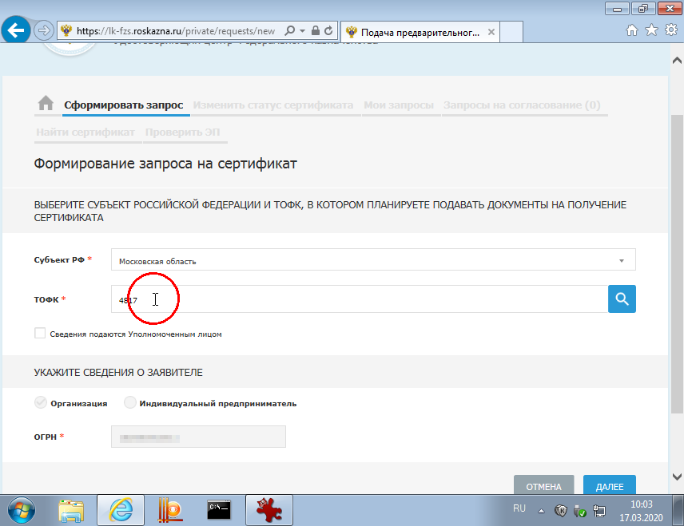
В открывшемся окне нажмите кнопку Выбрать 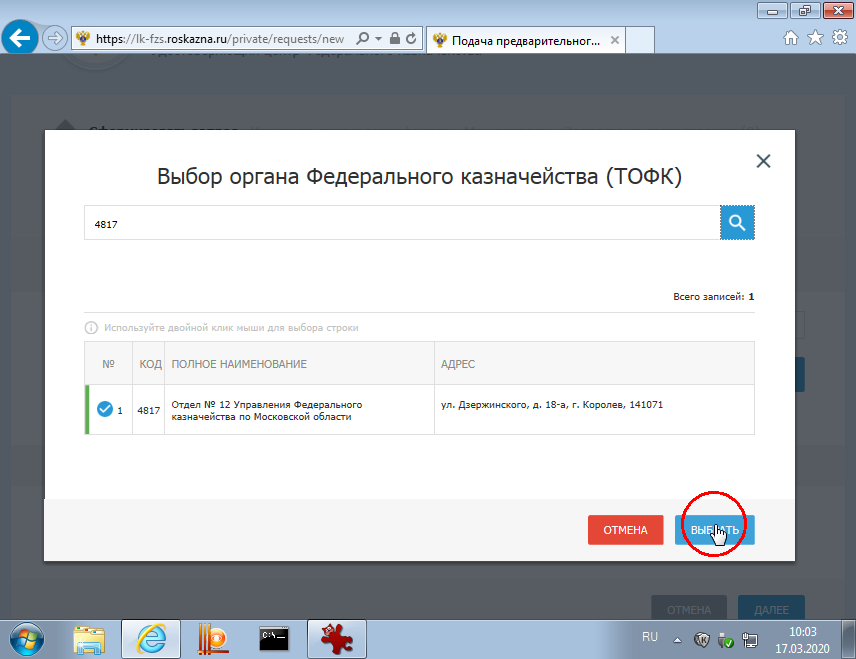
Нажмите Далее 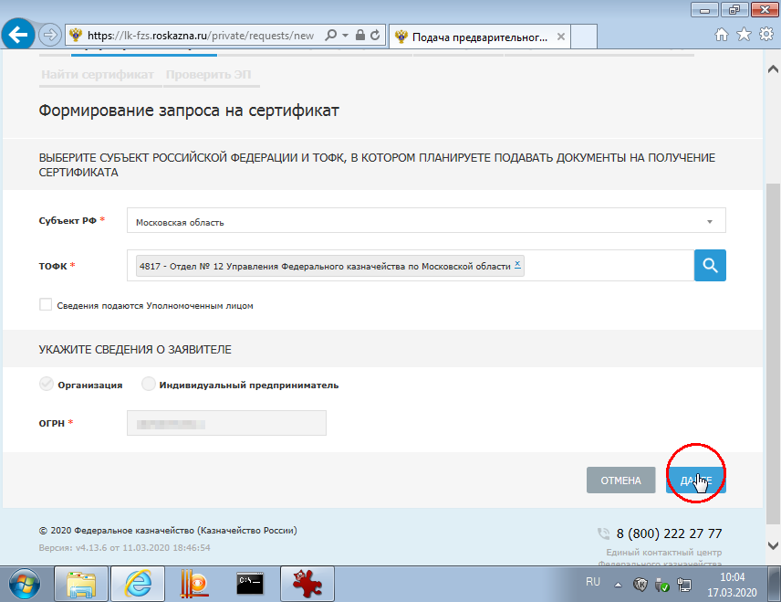
Формирование запроса
В блоке Выберите запрашиваемый тип сертификата отметьте Сертификат юридического лица 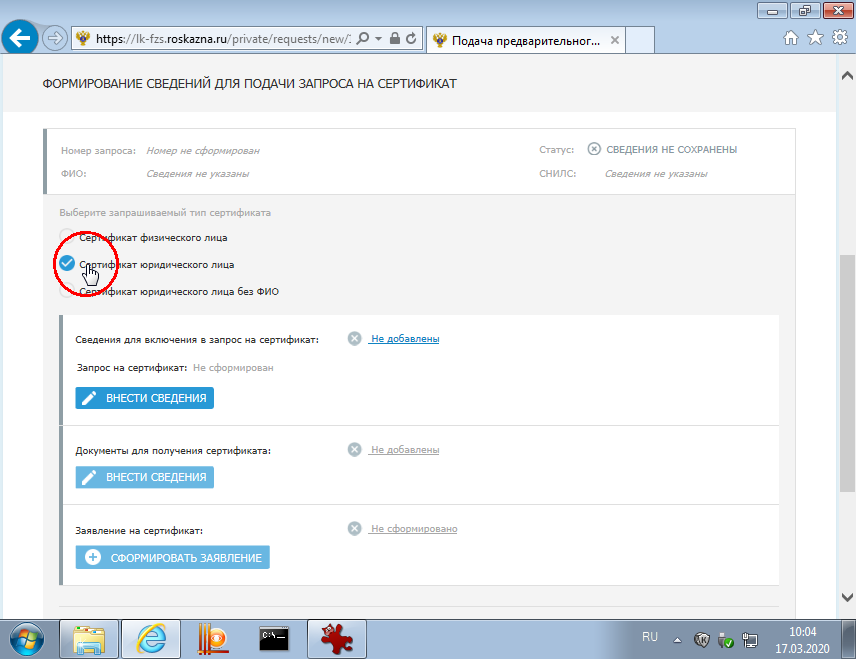
Нажмите первую доступную кнопку Внести сведения 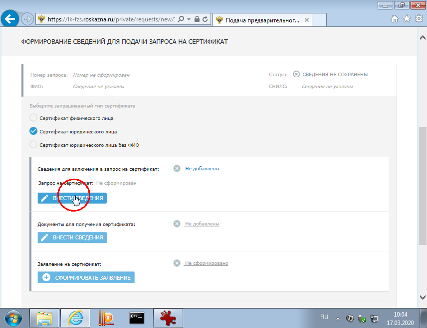
В открывшемся окне заполните все поля, отмеченные красной звезочкой.
Для сертификата юридического лица следует заполнить:
- Блок полномочий сертификата (галочки) - ничего добавлять не нужно, оставьте только уже отмеченную Аутентификацию клиента.
- Должность заполняется так, как указано в ЕГРЮЛ - проще всего скопировать со странички ЕГРЮЛа. Важно не допустить опечатки в этом поле - оно проверяется автоматически по базам данных налоговой, в случае ошибки запрос не дойдет до казначейства.
- Адрес - аналогично должности, нужно указать улицу и дом из данных ЕГРЮЛ.
После тщательного заполнения запроса нажмите кнопку Сохранить и сформировать запрос на сертификат

Если сайт спросит подтверждения доступа в интернет нажмите Да 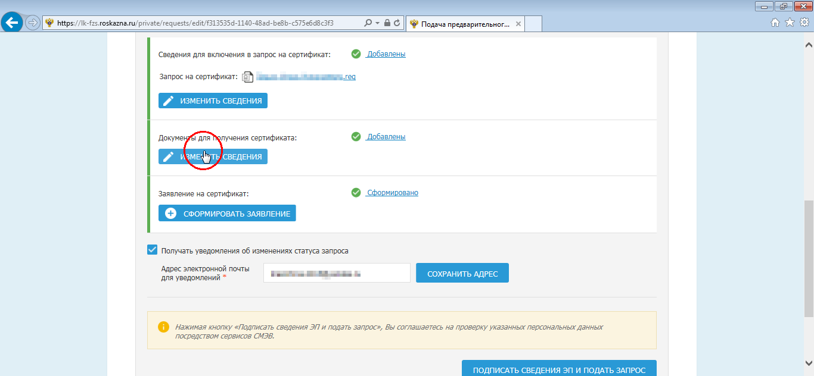
Откроется окно выбора носителя для нового ключа. Внимательно выберите нужную флешку или токен - туда будет записана новая закрытая часть ключа.
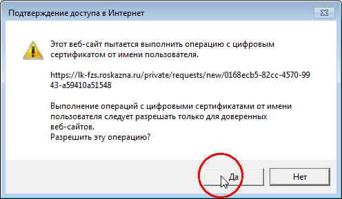
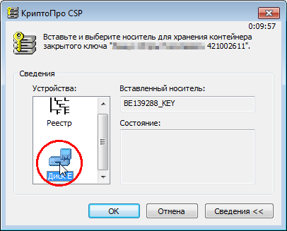
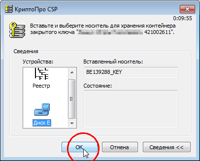
КриптоПро попросит вас подвигать мышкой пока не пропадет окошко 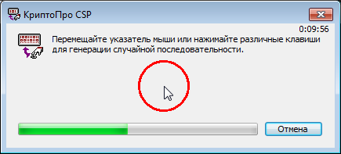
Следующий шаг чрезвычайно важен: нужно придумать и дважды ввести пароль. Этот пароль будет запрашивать КриптоПро при использовании ключа - в каких-то случаях это происходит при входе в личный кабинет (например в bus.gov.ru), в каких-то - только при подписи документа (например в СУФД или Электронном бюджете).
Настоятельно рекомендую задокументировать этот пароль. Нередки случаи, когда от создания запроса до реальной необходимости использовать ключ проходит достаточное время для того чтобы этот пароль окончательно забыть. Возможности каким-то образом его "восстановить" или "сбросить" нет, в том числе и у операторов в казначействе.
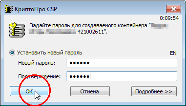
Подписание и отправка запроса
После создания контейнера портал вернет вас на основную страницу создания запроса. Нажмите кнопку Изменить сведения.
В открывшемся окне проверьте правильность введенных паспортных данных. Обратите внимание на поле Документ или сведения, подтверждающие полномочия получателя сертификата - так как мы делаем ключ на руководителя организации данное поле дожно остаться пустым. Нажмите кнопку Сохранить 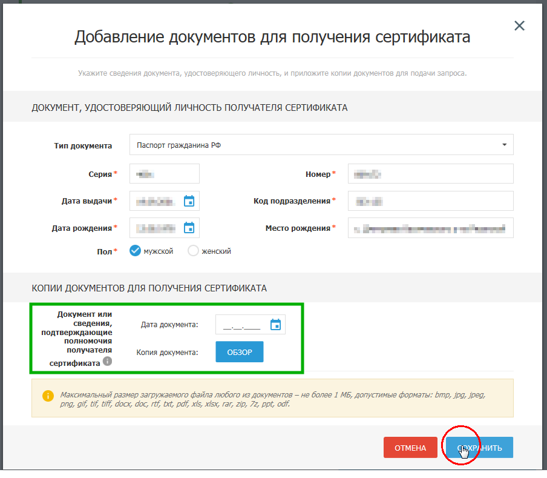
Стала доступна кнопка Сформировать заявление, нажмите ее. 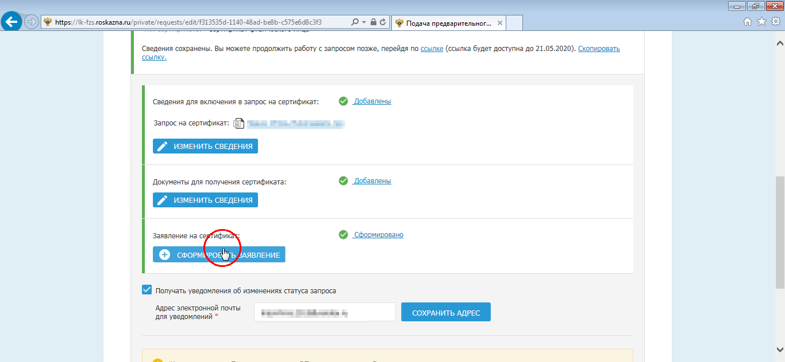
Откроется большая "бумажная" форма заявления. Ее нужно заполнить, обратите внимание на следующие поля:
- Наименование документа, подтверждающего полномочия получателя сертификата и два поля следом (дата и номер документа) - оставляем пустыми, так как делаем сертификат на руководителя
- Информация для приостановления СКП - любое слово или фраза, желательно на русском. Могут спросить по телефону при обращении в поддержку, крайне желательно записать его себе так же как и пароль от ключа.
- Блок подписей - заполнить дважды должность руководителя, расшифровку подписи и дату.
Убедившись в корректности данных нажмите кнопку Сохранить 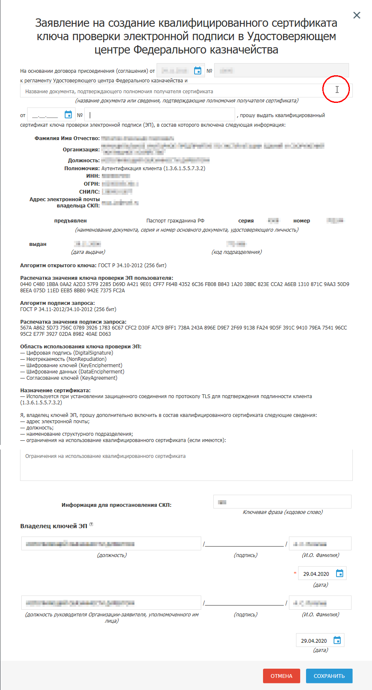
Финальная кнопка - Подписать сведения ЭП и подать запрос. Нажмите ее, на вопрос Подписать сведения электронной подписью ответьте утвердительно 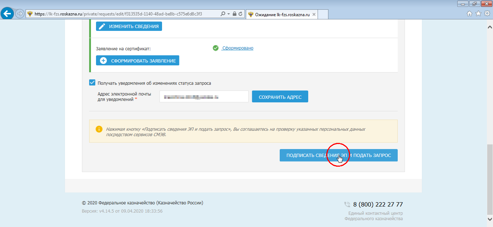 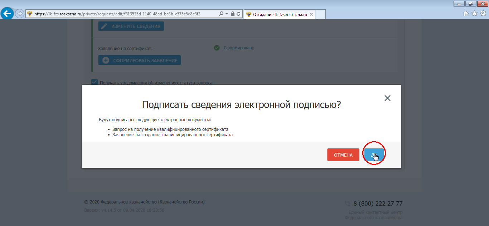
В слеующем окне еще раз подробно покажет всю отправляемую информацию - данные о запросе и подписываемые вложения. Проверьте все еще раз и нажмите кнопку Подписать ЭП Возможно сайт попросит разрешения запустить КриптоПро ЭЦП браузер плагин - нажмите Да 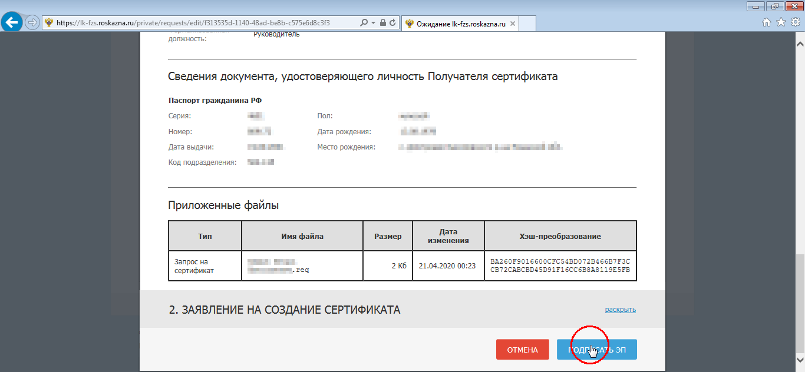 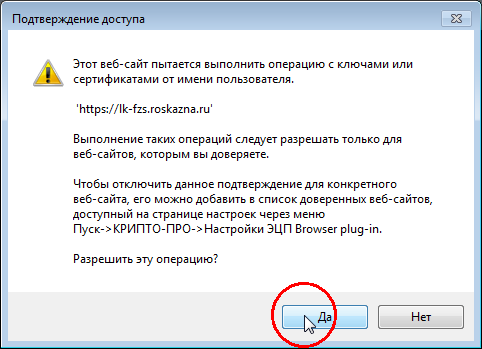
Выберите сертификат, которым будет подписан запрос. Покажет список из доступных сертификатов, можно выбрать любой. 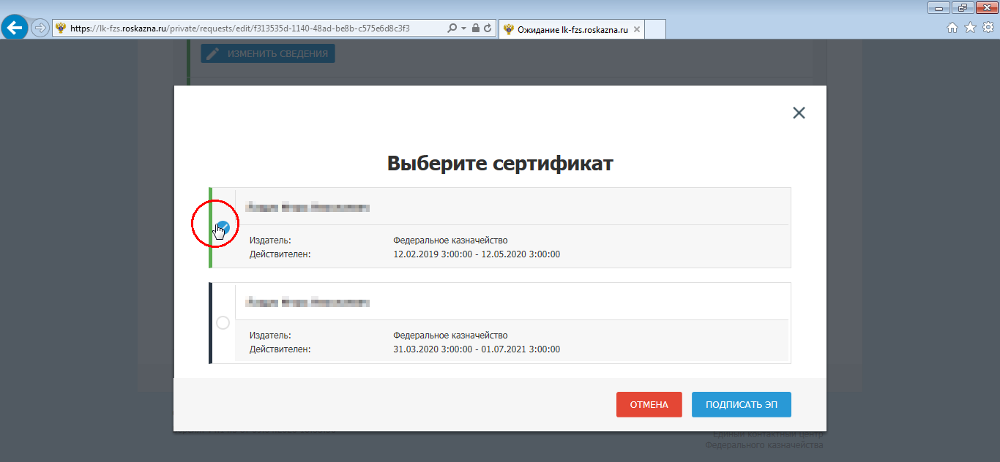 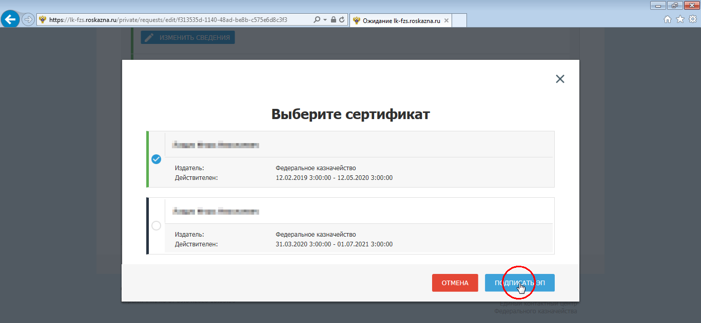
Появится сообщение о том, что запрос успешно подписан и направлен на проверки. 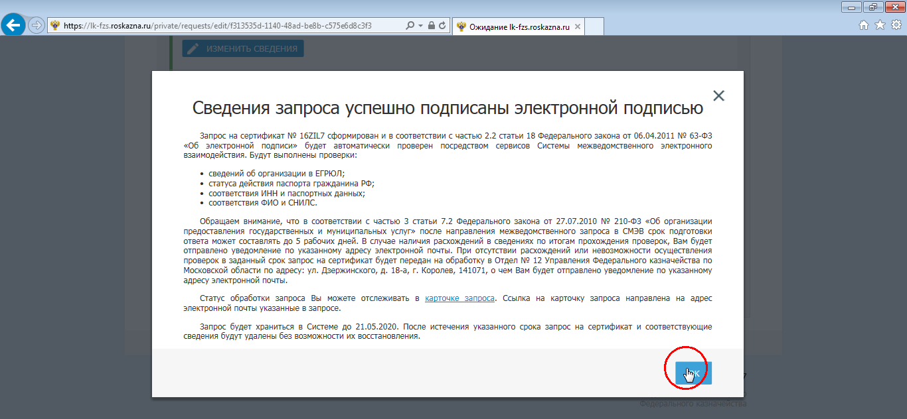